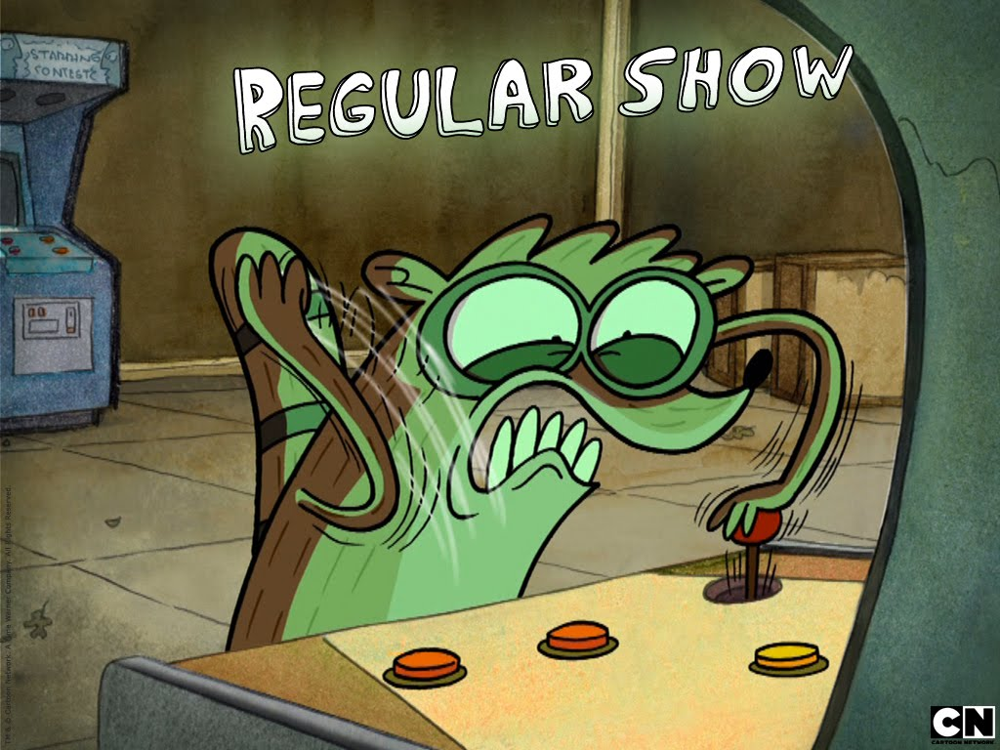
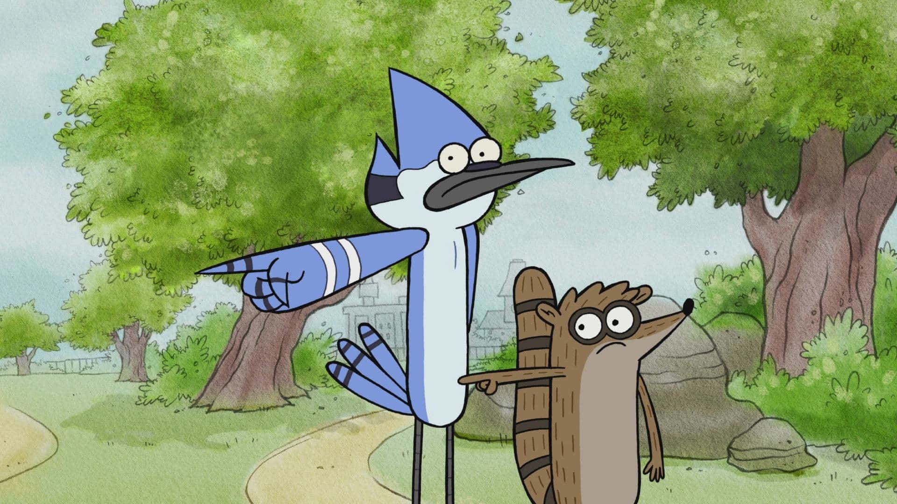

"Un Show Más" es como esa combinación perfecta de humor absurdo y situaciones cotidianas que, sinceramente, no sabes cómo terminan siendo tan épicas. Este show, creado por J.G. Quintel, es una oda al ridículo, pero con un toque de nostalgia de esos días en los que todo te parecía emocionante. Mordecai y Rigby, dos personajes que podrían ser tus amigos del alma pero también los más problemáticos, trabajan como jardineros en un parque… pero, como buen show de Cartoon Network, las cosas siempre se salen de control. Y es que en Un Show Más, hasta lo más sencillo se convierte en una pelea épica, una aventura fuera de lo común, o una total calamidad. En resumen, es como ver dos tipos viviendo sus días en modo "todo es una gran aventura... y un desastre".
Un Show Más es uno de esos programas que se hizo popular porque logró mezclar lo absurdo con la cotidianidad de una forma única. A primera vista, parece una serie sobre dos vagos que trabajan en un parque, pero pronto se convierte en un carrusel de situaciones bizarras y personajes excéntricos. Mordecai y Rigby no son tus típicos héroes de dibujos animados; son un par de amigos que, en lugar de hacer lo correcto, terminan en todo tipo de enredos. Sin embargo, lo que realmente distingue a este show es su capacidad para subvertir las expectativas. Cada episodio está lleno de giros inesperados, y lo que parece ser un día común se transforma rápidamente en una batalla épica contra criaturas cósmicas, monstruos de videojuegos o incluso una invasión de una dimensión paralela. Sin dudas, es un programa que juega con la nostalgia de la infancia, pero también lo hace con humor y referencias que van directo a la audiencia adulta.

Lo que Un Show Más hace de forma brillante es presentar a los personajes más comunes, como el típico par de amigos flojos y algo irresponsables, pero llevarlos al extremo. Mordecai y Rigby no solo son los encargados de mantener un parque, sino que constantemente desatan caos a su alrededor con sus acciones impulsivas y su falta de compromiso. Este programa, creado por J.G. Quintel, resalta las pequeñas pero locas aventuras que pueden surgir de las decisiones más simples. Con una mezcla de surrealismo y humor negro, Un Show Más nos recuerda que las cosas no siempre salen como las planeamos, pero que eso también puede ser lo más divertido de todo. Si algo tiene de especial la serie es que no teme ir más allá de lo convencional para ofrecer momentos que te harán reír tanto como reflexionar sobre las tonterías cotidianas de la vida.

Un Show Más es más que solo un par de bromas sobre dos personajes que no tienen mucho que hacer en la vida. Es una crítica irónica y sarcástica a la vida moderna, donde los problemas más sencillos pueden tomar proporciones gigantescas y los pequeños momentos de paz se ven interrumpidos por el caos total. En este mundo, el parque se convierte en el centro de una serie de situaciones inusuales, desde peleas interdimensionales hasta desafíos surrealistas, que jamás se imaginan que podrían suceder en un lugar tan "normal". Cada episodio es como un homenaje a todas esas situaciones que en la vida real nos parecen absurdas, pero que a través de la exageración, logran hacernos ver lo ridículo que es el comportamiento humano. Y, a pesar de sus travesuras, Mordecai y Rigby logran conectar con los espectadores, ya que, aunque son el epítome de la irresponsabilidad, todos alguna vez hemos sido un poco como ellos.
Lo que Un Show Más logra capturar tan bien es esa sensación de que la vida cotidiana está llena de momentos raros e impredecibles. A través de Mordecai, Rigby y el resto de los personajes, nos recuerda que la rutina no tiene por qué ser aburrida, y que siempre hay algo extraño por descubrir, sin importar cuán pequeño sea el acontecimiento. Aunque la serie gira en torno a dos personajes con un enfoque algo perezoso y negligente, lo interesante es cómo cada episodio ofrece lecciones disfrazadas de situaciones locas y cómicas. El humor absurdo está siempre presente, pero bajo esa capa, hay temas sobre la amistad, la responsabilidad y la importancia de disfrutar los momentos, incluso cuando todo parece estar yendo mal. Es un show que sabe equilibrar lo fantástico con lo mundano de una manera que sigue sorprendiendo a los fans, incluso años después de su estreno.